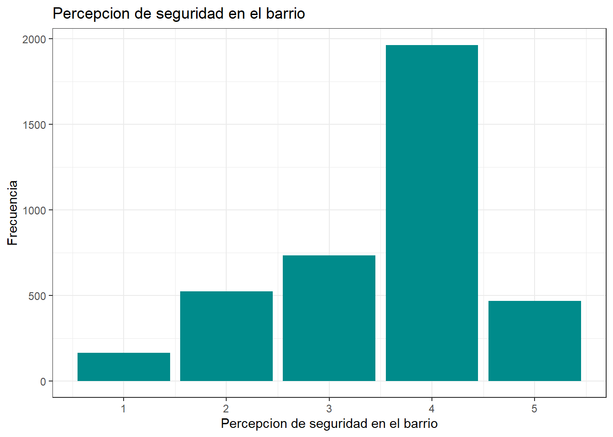

| r13_ideol_01 | n | Porcentaje |
|---|---|---|
| Derecha | 530 | 13.77 |
| Centro | 285 | 7.40 |
| Izquierda | 720 | 18.70 |
| Ninguno | 2315 | 60.13 |
| Total | 3850 | 100.00 |
Percepcion de Inseguridad Segun Orientacion Politica
R para el análisis de datos
Introducción
En el contexto actual chileno, donde nos acercamos a las próximas elecciones presidenciales, se han intensificado los discursos mediáticos por parte de los distintos sectores políticos que buscan llegar al sillón presidencial en 2026. Múltiples debates, entrevistas y comentarios han comenzado a circular entre la población chilena, abordando tópicos troncales en las futuras agendas y dejando entrever distintas posturas ideológicas y pragmáticas frente a ellos.
En este escenario, decidimos investigar una de las mayores preocupaciones de la ciudadanía. Tal como indica el estudio Preocupaciones del Mundo de la empresa de investigación Ipsos (2024), el sondeo arrojó que en Chile el tema del crimen y la violencia lidera la lista de preocupaciones con un 69%.
Chile lleva tiempo enfrentando un drama importante en torno a este tópico, lo que se refleja en la amplia literatura existente, especialmente desde enfoques que lo abordan mediante variables sociodemográficas. Sin embargo, retomando el actual contexto electoral, nos interesa en particular analizar la incidencia de los medios de comunicación tradicionales, los cuales se encargan de divulgar las agendas de los candidatos y que, estos no solo informan sino que también ayudan a construir marcos interpretativos de la realidad desde una posicion aventajada (Teun A. van Dijk y Dijk 2016). Al mismo tiempo, buscamos entender cómo se articula esta percepción de inseguridad en relación con la tendencia política de la ciudadanía.
Al respecto, autores como (Juanjo Medina et al. 2003) han señalado que aparentemente existe una relación directa entre poseer una posición más de derecha y el miedo al delito (p. 11). Sin embargo, esta relación no implica necesariamente una causalidad, sino que podría estar enmarcada en un concepto más complejo de “percepción emocional”. Tal como indican (Marcela Muratori et al. 2015), la tendencia política influye en un conjunto de percepciones que terminan delegando en “problemáticas de relevancia social, como la inseguridad y el miedo al delito” (p. 17).
Es por ello que el presente trabajo buscará analizar la percepción de inseguridad según la orientación política y la confianza en los medios. Esto, enmarcado en el clima político actual chileno, donde la polarización entre los sectores políticos aumenta de cara a las próximas elecciones presidenciales. Por otro lado, en esta suerte de precampaña, muchos discursos mediáticos ofrecidos por los candidatos han puesto especial foco en el tema de la seguridad, presentándolo como un asunto que debe ser atendido cuanto antes. Consideramos, entonces, relevante comprender qué tanto inciden en la percepción de inseguridad variables como la orientación política y la confianza en los medios de comunicación, ya que planteamos como hipótesis que aquellos encuestados con una mayor tendencia política hacia la derecha y con niveles más altos de confianza en los medios tenderán a mantener mayores niveles de percepción de inseguridad.
Para ello, se analizarán los datos recogidos por el COES a través de su estudio ELSOC del año 2023, centrando el análisis en las variables de “Orientación política”, “Confianza en los medios” y “Percepción de seguridad del barrio”. La elección de esta base responde a su carácter representativo a nivel nacional y a su solidez metodológica, lo que permite explorar con mayor profundidad las relaciones entre posicionamiento político, confianza institucional y percepciones subjetivas de inseguridad.
Variables
Como se mencionó anteriormente, las variables a utilizar serán las siguientes:
- Posición Política (r13_ideol_01)
- Confianza en los medios de comunicación tradicionales (c05_12)
- Percepción de inseguridad en el barrio de residencia (t10_p).
Para efectos prácticos, se modificaron las categorias de respuesta de la variable r13_ideol_01 en (Derecha, Centro, Izquierda, Ningúno).
Esto lo podemos repetir para la carga de la base de datos y el procesamiento de los datos.
Ahora con la base datos abierta procederemos a describr las variables que se usaran para este trabajo, se procedera a Opercionalizar las variables
Se Agrupan los no sabe no responde dentro de los NA y ahora se procederan a ser eliminados
Descripción de variables
En este caso, se seleccionaron las variables:
-r13_ideol_01: Sector idiologico con el que se identifica el encuestado
Ahora se hara una tabla de frecuencias para esta variable categorica
- c05_12: Grado de Confianza: en los medios de comunicacion tradicionales
| Variable | media | mediana | sd | min | max | n |
|---|---|---|---|---|---|---|
| c05_12 | 2.26026 | 2 | 1.0549 | 1 | 5 | 3850 |
- t10: Percepcion de seguridad del barrio
| Variable | media | mediana | sd | min | max | n |
|---|---|---|---|---|---|---|
| t10 | 3.531948 | 4 | 1.008739 | 1 | 5 | 3850 |
Graficos




Análisis
Para mantener un orden dentro de la interpretación de los datos observados, es prudente desglosar los resultados según variables donde, en primer lugar se destaca que la posición ideológica de los encuestados actua de una forma intersante, donde la derecha cuenta con un 13.7%, el centro solo con un 7.4%; la izquierda con un 18.7% y aquellos que deciden no posicionarse en algun sector, representan una mayoría con un 60.13%.
Dentro de la confianza en los medios, se nota que esta es relativamente baja puesto que su mediana es un 2, indicando que más de la mitad de encuestados tiene un muy bajo nivel de confianza en los medios e incluso, su media se posiciona en un 2.26.
Finalmente, la percepción de seguridad en los barrios de residencia es muy distinta, manteniendo una media de 3.53, cifra media alta donde este estadistico junto a la media nos dan cuenta de que efectivamente, la percepcion de seguridad en el barrio mantiene niveles altos.
Sobre los gráficos bivariados, llama la atención la distribución que tiene la confianza en los medios de comunicación según la posición política de los encuestados ya que, si bien todos los sectores no tienden a superar el nivel 3 de confianza, los encuestados posicionados en tendencias de derecha comienzan la confianza en niveles más altos que el resto, donde además dentro del diagrama de cajas se observa la existencia de datos atípicos posicionados en el nivel de confianza más alto.
A manera de cierre se puede establecer que, La orientación política y la confianza en los medios no incide en gran medida para la percepción de seguridad en el barrio, sin embargo, cabe recalcar que este es un análisis simple, se recomendaría hacer uso de otros modelos para profundizar más y llegar a conclusiones significativas.
Seccion Trabajo N°2
Construccion de Escala
Construcción de una escala con el objetivo de sintetizar las variables incluidas en este estudio, se intentó construir una escala compuesta a partir de tres indicadores: posición política (r13_ideol_01), confianza en los medios de comunicación tradicionales (c05_12) y percepción de inseguridad en el barrio (t10). Para ello, se realizó una transformación lineal de cada variable a un rango común entre 0 y 1, y se calculó el promedio de estos valores por caso.
Como se procedio a generar un nuevo elemento se procede nuevamente a eliminar los NA
Ahora se puede trabajar directamente en la creacion de la Escala ya que se han dejado de lado los NA
Nuestro primer paso a crear una funcional, fue opercionalizar las variables para que partes desde el punto mas bajo posible siendo 0, no presenta mayores problemas para el entendimiento del trabajo lo mas importante a notar es que para el caso de la variable r13_ideol_01 es que se debe el 1 (derecha) y 6 (ninguno) se consideraran derecha desde la perspectiva en que resultados anteriores (vease grafico 4), sus resultados se tienden a coincidir, aparte de eso ningun otro cambio es relevante para esta operacionlizacion
r13_ideol_01 c05_12 t10
r13_ideol_01 1.000000000 0.003598821 0.01185843
c05_12 0.003598821 1.000000000 0.06269911
t10 0.011858434 0.062699109 1.00000000Ahora analizamos la correlacion, entre las variables que seran usadas para analizar nuestra escala, como primer elemento notamos que no se ven numero negativos por ende todas las variables selccionadas apuntan hacia la misma direccion, asi que no se deben tratar mas la variables ya que no hay variables invertidas.
Como segundo elemento podemos notar que las correlaciones entre variables son relativamente debiles, ya que ninguna supera el 0.10 minimo para que sean considerardas como debiles para este caso en particular la correlacion entre variables es inexistente, para considerciones futuras se deberan buscar variables que mejor representen la hipotesis de este trabajo
Reliability analysis
Call: psych::alpha(x = ELSOC_Limpia)
raw_alpha std.alpha G6(smc) average_r S/N ase mean sd median_r
0.061 0.074 0.052 0.026 0.08 0.055 1.6 0.7 0.012
95% confidence boundaries
lower alpha upper
Feldt -0.06 0.06 0.17
Duhachek -0.05 0.06 0.17
Reliability if an item is dropped:
raw_alpha std.alpha G6(smc) average_r S/N alpha se var.r med.r
r13_ideol_01 0.1176 0.1180 0.0627 0.0627 0.1338 0.061 NA 0.0627
c05_12 0.0218 0.0234 0.0119 0.0119 0.0240 0.063 NA 0.0119
t10 0.0069 0.0072 0.0036 0.0036 0.0072 0.066 NA 0.0036
Item statistics
n raw.r std.r r.cor r.drop mean sd
r13_ideol_01 828 0.70 0.57 0.038 0.010 0.94 1.46
c05_12 828 0.54 0.60 0.173 0.038 1.51 1.08
t10 828 0.51 0.60 0.194 0.047 2.40 0.99
Non missing response frequency for each item
0 1 2 3 4 miss
r13_ideol_01 0.66 0.06 0.10 0.06 0.12 0
c05_12 0.20 0.29 0.34 0.12 0.05 0
t10 0.04 0.17 0.23 0.48 0.08 0Posteriormente, se evaluó la consistencia interna de la escala mediante el coeficiente alfa de Cronbach, obteniendo un resultado de raw alpha = 0.060, lo cual indica una baja fiabilidad interna entre variables nuevamente demuestra que las variables no estan midiendo el mismo conjunto de datos.
Min. 1st Qu. Median Mean 3rd Qu. Max.
0.000 3.000 5.000 4.856 6.000 12.000 Finalmente la escala esta contruida, que va desde el numero mas minimo posible siendo este 0 a un maximo de 12, obviamente como se ha detectado previamente esta no es significativa en ningun sentido ya que tanto los alphas de combrach presentados como los resultados de correlacion entre variables
Grafico de la escala

Para este grafico se puede apreciar una tendencia clara a que ni confiar ni se deconfia de los medios de comunicacion segun esta escala, es mas raro confiar plenamente en ellos.
interpretacion de la escala
Este resultado era esperable, dado que las tres variables representan dimensiones conceptualmente distintas y no necesariamente deben estar correlacionadas entre sí. Desde un punto de vista metodológico, esto sugiere que no es adecuado combinarlas en una única escala. Aun así, el ejercicio resulta útil para familiarizarse con el procedimiento de estandarización y evaluación de escalas, tal como se ha solicitado en este trabajo. Esto se ve reforzado por los resultados expuesto en la prueba del alpha de Combrach y por la correlacion entre variables.
Esto puede sugerir, quizas la mas simple de todas es que la posicion politica no influye en como se perciben los medios de comunicacion, asi explicando la baja correlacion entre variables aqui presentes. elevando la pregunta que variable esta influyendo entonces en la confianza en los medios en la poblacion chilena.
Referencias
Juanjo Medina, Juanjo Medina, Juanjo Medina, y Juanjo Medina. 2003. «Inseguridad ciudadana, miedo al delito y policía en España», enero.
Marcela Muratori, Marcela Muratori, Marcela Muratori, Marcela Muratori, Elena Mercedes Zubieta, Elena Mercedes Zubieta, y Elena Mercedes Zubieta. 2015. «Clima emocional, inseguridad y miedo al delito: Percepciones diferenciales en función del auto-posicionamiento ideológico» 11 (22): 7-18.
Teun A. van Dijk, y Teun A. van Dijk. 2016. «Análisis Crítico del Discurso», n.º 30 (enero): 203-22. https://doi.org/10.4206/rev.austral.cienc.soc.2016.n30-10.